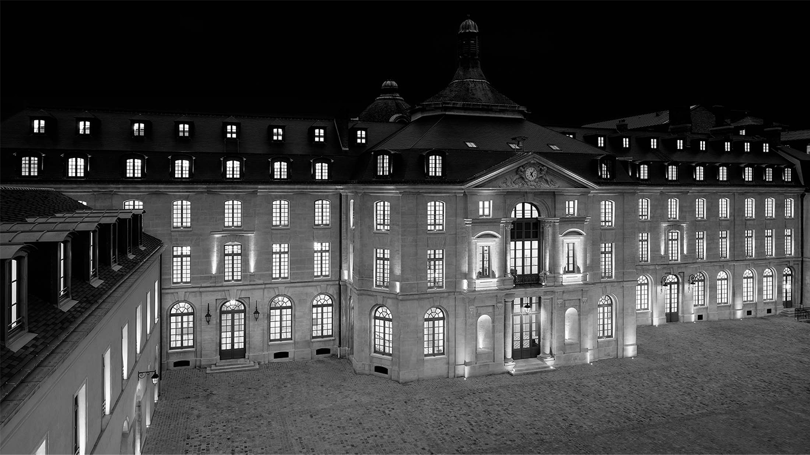
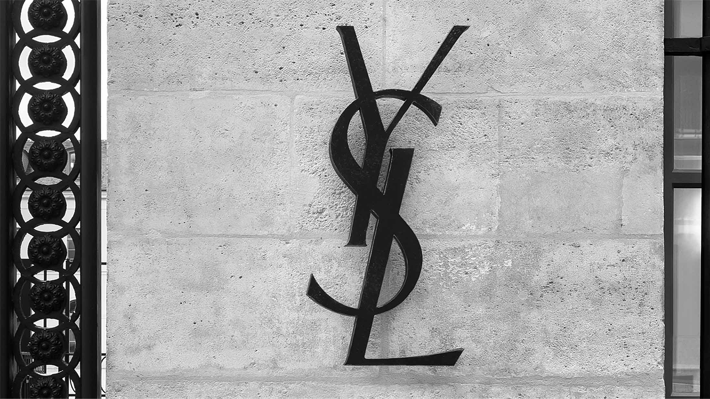
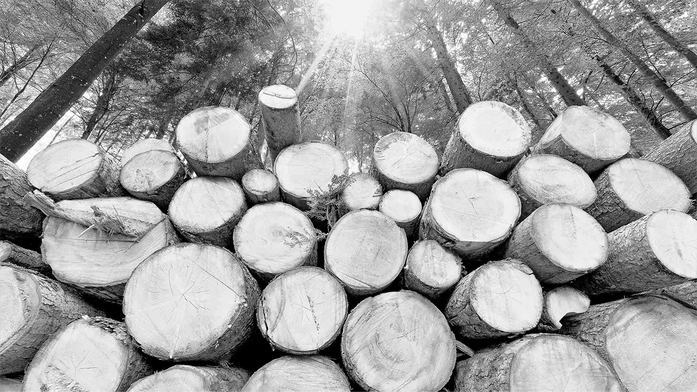
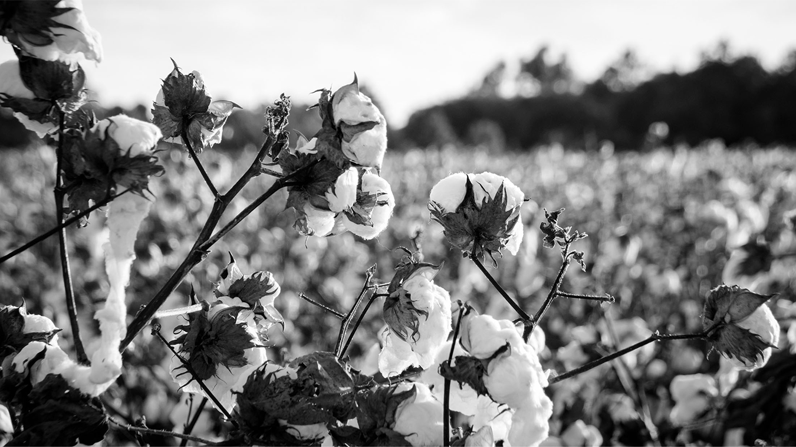
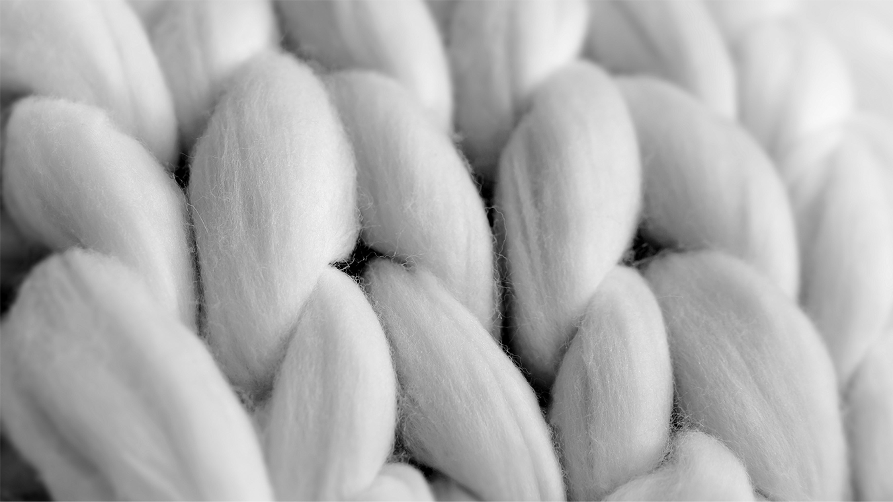
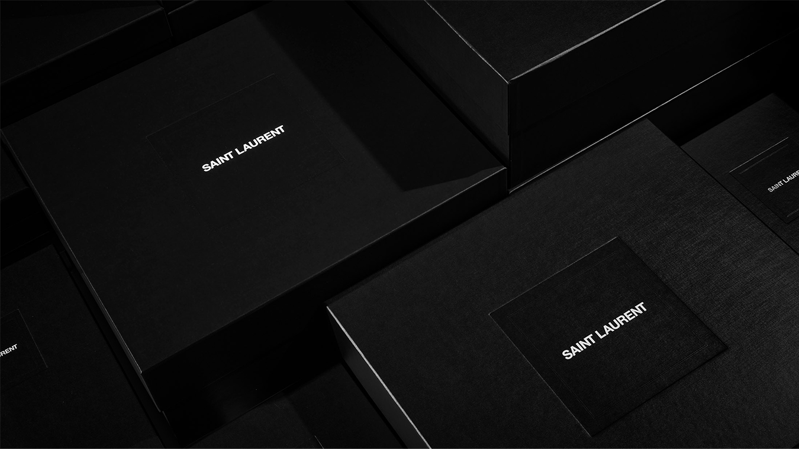
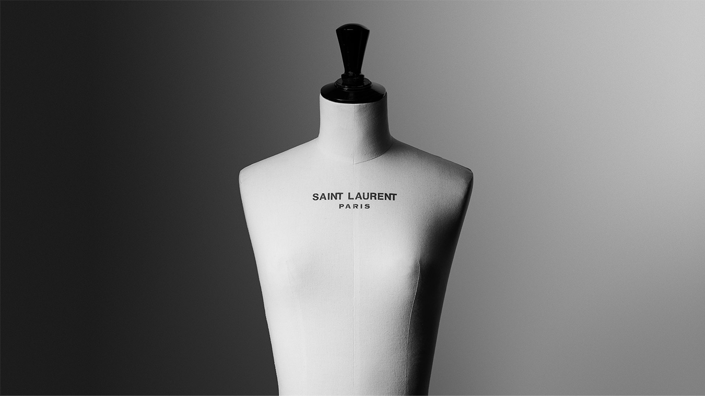
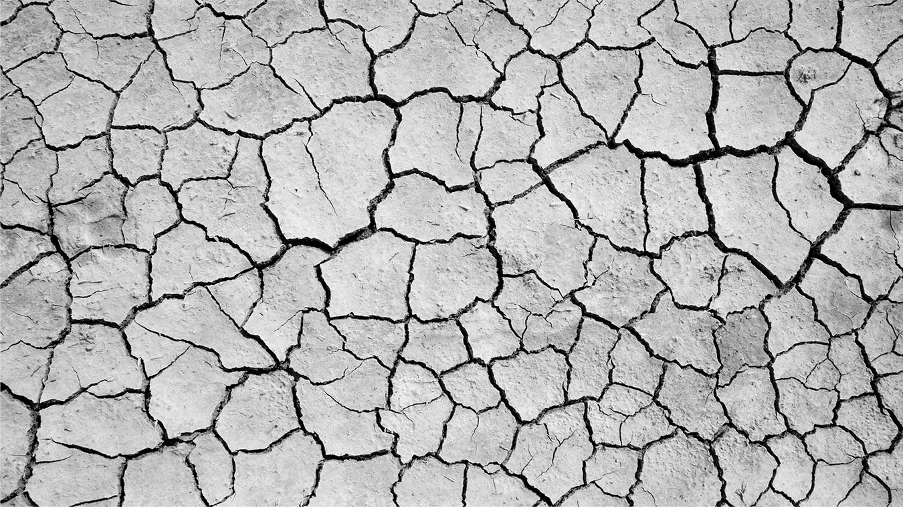

-

APPROACH
SAINT LAURENT’S APPROACH IS ROOTED IN A QUEST TO CONSTANTLY IMPROVE—IN MEANINGFUL AND MEASURABLE WAYS. RECOGNIZING THE
COMPLEX NATURE OF SUSTAINABILITY, THE HOUSE IS ENGAGED IN A BROAD RANGE OF INITIATIVES AIMED AT PROTECTING HUMAN RIGHTS AND
DIGNITY, PRESERVING THE ENVIRONMENT, AND IMPLEMENTING RESPONSIBLE SOURCING.
SAINT LAURENT EMBRACES THE RESPONSIBILITY TO WORK TODAY FOR A BETTER TOMORROW. FAR MORE THAN AN ETHICAL NECESSITY,
SUSTAINABILITY IS A FORCE OF INNOVATION AND A GAUGE OF SUCCESS. IT IS EMBEDDED WITHIN THE CULTURE OF THE HOUSE, DRIVING
DECISIONS AND BEHAVIORS AT EVERY LEVEL.
TO BUILD AWARENESS OF SUSTAINABILITY WITHIN THE HOUSE, ALL EMPLOYEES ARE ENCOURAGED TO COMPLETE A THREE-PART COURSE ON
THE SUBJECT. THIS CURRICULUM IS ALSO A FUNDAMENTAL COMPONENT OF THE SAINT LAURENT COUTURE INSTITUTE, A SIX-MONTH COURSE
FOR ADVANCED FASHION STUDENTS AND EMPLOYEES OF THE HOUSE THAT WAS DEVELOPED IN PARTNERSHIP WITH THE INSTITUT FRANÇAIS
DE LA MODE. SINCE 2017, APPROXIMATELY 2,000 PEOPLE HAVE PARTICIPATED IN THESE EDUCATIONAL PROGRAMS.
-

STANDARDS
AS PART OF KERING, SAINT LAURENT IS ENGAGED IN A MULTIFACETED STRATEGY TO ACHIEVE A MORE SUSTAINABLE AND RESPONSIBLE
DEFINITION OF LUXURY. THE HOUSE AND ITS PARTNERS FOLLOW CODES AND STANDARDS DEVELOPED AND REFINED BY KERING SINCE THE
GROUP’S ESTABLISHMENT OF ITS FIRST CODE OF ETHICS 25 YEARS AGO. THESE OPEN-SOURCE GUIDELINES, WHICH ARE REVIEWED AND UPDATED
REGULARLY IN CONSULTATION WITH SUBJECT-MATTER EXPERTS, ADDRESS TOPICS SUCH AS HUMAN RIGHTS, BIODIVERSITY, RAW MATERIAL
SOURCING, AND INTERNAL OPERATIONS.
TOWARD A MORE SUSTAINABLE SUPPLY CHAIN
- KERING GROUP CODE OF ETHICS
- SUSTAINABILITY PRINCIPLES
- HUMAN RIGHTS POLICY
TOWARD MORE SUSTAINABLE MATERIALS AND MANUFACTURING
- BIODIVERSITY STRATEGY
- ANIMAL WELFARE STANDARDS
- STANDARDS FOR RAW MATERIALS AND MANUFACTURING PROCESSES
- PRODUCT RESTRICTED SUBSTANCES LIST
- MANUFACTURING RESTRICTED SUBSTANCES LIST
TOWARD MORE SUSTAINABLE STORES
- GUIDELINES FOR STORE PLANNING AND CONSTRUCTION
- GUIDELINES FOR STORE OPERATIONS AND MANAGEMENT
-

MEASURING IMPACT
SAINT LAURENT IS ENGAGED TO MAKING THE ENVIRONMENTAL IMPACTS OF ITS ACTIVITIES VISIBLE, QUANTIFIABLE, AND COMPARABLE THROUGH
KERING’S ENVIRONMENTAL PROFIT & LOSS (EP&L) ACCOUNT. SINCE 2012, THIS TOOL HAS BEEN USED TO MEASURE CARBON EMISSIONS, WATER
CONSUMPTION, AIR AND WATER POLLUTION, LAND USE, AND WASTE PRODUCTION ALONG THE ENTIRE SUPPLY CHAIN. THE IMPACTS ARE THEN
CONVERTED INTO MONETARY VALUES, HELPING TO GUIDE STRATEGY, IMPROVE PROCESSES, AND CHOOSE THE BEST-ADAPTED TECHNOLOGIES.
AMONG THE FINDINGS REVEALED BY THE EP&L IS THAT APPROXIMATELY 70% OF IMPACTS HAPPEN AT THE LEVEL OF RAW MATERIAL PRODUCTION
AND PROCESSING. INSIGHTS SUCH AS THESE HAVE INFORMED THE CREATION OF SUSTAINABILITY PROGRAMS TAILORED TO THE HOUSE AND TO
EACH PRODUCT CATEGORY. THESE INITIATIVES HAVE BEEN DEPLOYED ACROSS THE VALUE CHAIN, WITH A FOCUS ON MAXIMIZING RESOURCE
EFFICIENCY, IMPLEMENTING CIRCULARITY STRATEGIES, AND DEPLOYING SUSTAINABLE SOURCING PRACTICES, PARTICULARLY FOR FIBERS AND
LEATHER.
IN ALIGNMENT WITH KERING’S 2025 SUSTAINABILITY STRATEGY, SAINT LAURENT IS ON TRACK TO ACHIEVE A 40% REDUCTION IN EP&L INTENSITY
RELATIVE TO GROWTH, USING 2015 AS A BASELINE. THIS TARGET REQUIRES ACTION ACROSS THE SUPPLY CHAIN, FROM FARM TO FINAL PRODUCT
TO MARKET DISTRIBUTION. IN ADDITION, SAINT LAURENT IS COMMITTED TO ACHIEVING NET-ZERO GREENHOUSE GAS EMISSIONS BY 2050. THE
HOUSE MEETS ITS CARBON OFFSET PROGRAM TARGETS THROUGH VERIFIED REDD+ PROJECTS, WHICH NOT ONLY CONSERVE CRITICAL FORESTS
AND BIODIVERSITY BUT ALSO SUPPORT THE LIVELIHOODS OF LOCAL COMMUNITIES.
-

HOUSE OPERATIONS
“AT SAINT LAURENT, SUSTAINABILITY IS A FUNDAMENTAL COMMITMENT. IT IS NOT A MARKETING EXERCISE BUT A MENTALITY.”
FRANCESCA BELLETTINI, CEO
IN ADDITION TO SETTING RIGOROUS STANDARDS FOR PARTNERS, SAINT LAURENT APPLIES ITS SUSTAINABILITY PRINCIPLES AND INDUSTRY-
LEADING PRACTICES WITHIN THE HOUSE.
ENERGY CONSUMPTION. IN 2020, 86% OF THE ELECTRICITY CONSUMED BY SAINT LAURENT ATELIERS, OFFICES, AND STORES CAME FROM
RENEWABLE SOURCES. THIS IS ON TRACK TO REACH 100% BY 2022. THE HOUSE PRIORITIZES THE USE OF ALTERNATIVE ENERGY, AS IN ITS
ANGERS READY-TO-WEAR ATELIER, WHICH USES A BIOMASS HEATING SYSTEM.
ENVIRONMENTAL CERTIFICATIONS.
SEVENTEEN OF THE HOUSE’S SITES HAVE EARNED ENVIRONMENTAL CERTIFICATIONS, INCLUDING 13 STORES
THAT HAVE ATTAINED LEED (LEADERSHIP IN ENERGY AND ENVIRONMENTAL DESIGN) PLATINUM STATUS, THE HIGHEST LEVEL AWARDED. THE
SAINT LAURENT HEADQUARTERS ON RUE DE BELLECHASSE IS CERTIFIED BY BREEAM AND BY HQE AT “EXCELLENT” AND “EXCEPTIONAL” LEVELS.
ALL NEW SITES ARE DESIGNED, DEVELOPED, AND OPERATED BASED UPON RIGOROUS ENVIRONMENTAL GUIDELINES, HELPING THE HOUSE TO
ACHIEVE NEARLY 100% ENERGY-EFFICIENT LED LIGHTING ACROSS THE GLOBAL STORE NETWORK.
SUSTAINABLE PACKAGING. COMPOSED PRIMARILY OF ENVIRONMENTALLY FRIENDLY AND DULY CERTIFIED MATERIALS, THE HOUSE’S PACKAGING
INCLUDES FLANNELS MADE OF GLOBAL ORGANIC TEXTILE STANDARD (GOTS)-CERTIFIED COTTON. SHOPPING BAGS ARE MADE OF PAPER THAT
CONTAINS A MINIMUM OF 40% RECYCLED CONTENT AND IS CERTIFIED BY THE FOREST STEWARDSHIP COUNCIL (FSC), WITH HANDLES OF
RECYCLED POLYESTER CERTIFIED BY THE GLOBAL RECYCLED STANDARD (GRS). TISSUE PAPER, STATIONERY, PRINTED MATERIALS, AND GIFT BOXES
ARE ALSO FSC CERTIFIED.
ELIMINATING SINGLE-USE PLASTICS. AS PART OF SAINT LAURENT'S COMMITMENT TO ELIMINATING SINGLE-USE PLASTICS ACROSS OPERATIONS,
EMPLOYEES OF THE HOUSE, STAFF MEMBERS, AND EVENT PARTICIPANTS ARE PROVIDED WITH REUSABLE CUPS AND/OR WATER BOTTLES.
ADDITIONALLY, BEGINNING WITH THE SPRING 22 COLLECTIONS, ALL GARMENT COVERINGS USED DURING TRANSPORT WILL BE REUSABLE. THESE
100% RECYCLED PLASTIC COVERINGS WILL REMAIN INTACT FROM THE ATELIER TO THE STORE.
-

RAW MATERIALS
SAINT LAURENT RECOGNIZES THAT INTENSE, CONSISTENT SCRUTINY OF RAW MATERIALS AND THEIR SOURCES IS VITAL TO REDUCING
ENVIRONMENTAL IMPACT. THE HOUSE IS ON TRACK TO ACHIEVE 100% TRACEABILITY OF KEY RAW MATERIALS AND 100% COMPLIANCE WITH
KERING’S STANDARDS FOR RAW MATERIALS AND MANUFACTURING PROCESSES BY 2025.
MONITORING PROGRESS. IN ADDITION TO TRAINING IN-HOUSE TEAMS AND EXTERNAL PARTNERS TO FOLLOW KERING GUIDELINES, SAINT
LAURENT APPROACHES EACH COLLECTION WITH THE GOAL OF INCREASING THE SHARE OF PRODUCTS MADE WITH SUSTAINABLE RAW
MATERIALS. AN ANALYSIS OF EACH COLLECTION IS USED TO TRACK PROGRESS AND TO ENSURE ONGOING IMPROVEMENT, WITH REFERENCE TO
LEADING CERTIFICATION SCHEMES FOCUSED ON TOPICS SUCH AS ENVIRONMENTAL IMPACT, RESPONSIBLE SOURCING, AND HUMAN RIGHTS.
TEXTILES. IN 2020, 60% OF THE COTTON PROCURED BY THE HOUSE WAS GLOBAL ORGANIC TEXTILE STANDARD (GOTS) CERTIFIED. BY THE END OF
2021, THE SHARE WILL HAVE REACHED 80%. IN 2020, 40% OF THE SILK AND WOOL SOURCED BY THE HOUSE WAS CERTIFIED SUSTAINABLE, EITHER
BY GOTS OR BY THE RESPONSIBLE WOOL STANDARD (RWS), AND 50% OF THE VISCOSE USED ORIGINATED IN SUSTAINABLY MANAGED FORESTS, AS
CERTIFIED BY THE FOREST STEWARDSHIP COUNCIL (FSC). SYNTHETICS REPRESENT LESS THAN 5% OF ALL TEXTILES USED BY SAINT LAURENT, AND
MOST ARE FROM RECYCLED SOURCES, AS CERTIFIED BY THE GLOBAL RECYCLED STANDARD (GRS).
HIDES. LEATHER AND PRECIOUS SKINS ARE SOURCED THROUGH A DEDICATED SYSTEM THAT CAN TRACK HIDES TO THEIR COUNTRY OF ORIGIN,
FOLLOWING THEM FROM FARMING TO PROCESSING TO TANNING TO FINISHING. KEY METRICS BASED ON KERING STANDARDS ARE CALCULATED
ON A MONTHLY BASIS AND FACTORED INTO SAINT LAURENT VENDOR RATINGS. IN 2020, 32% OF THE HOUSE’S LEATHERGOODS USED HIDES
TANNED WITHOUT METALS, WHICH REDUCES WATER AND ENERGY CONSUMPTION AND AVOIDS WATER POLLUTION AT TANNERY LEVEL.
STARTING FROM FALL 22 COLLECTIONS, SAINT LAURENT WILL NOT BE USING FUR.
SUSTAINABLE AGRICULTURE. THE HOUSE IS COMMITTED TO PROMOTING REGENERATIVE AGRICULTURAL PRACTICES AND SUSTAINABLE LIVESTOCK
PRODUCTION SYSTEMS. INITIATIVES INCLUDE THE CREATION OF A SUSTAINABILITY IMPACT VALUE PLATFORM IN SOUTH AFRICA THAT
INCENTIVIZES PARTNERS THROUGHOUT THE VALUE CHAIN TO IMPLEMENT REGENERATIVE FARMING PRACTICES. THIS PROJECT ALSO USES LASER
TECHNOLOGY TO TRACE LAMBSKINS FROM FARMS TO FINISHED GOODS.
-

SUPPLY CHAIN
WITH A RESPECT FOR AND PROTECTION OF HUMAN RIGHTS, SAINT LAURENT REQUIRES ITS SUPPLIERS TO MEET STANDARDS SET BY KERING THAT
ADDRESS TOPICS SUCH AS WORKING CONDITIONS, ENVIRONMENTAL STEWARDSHIP, AND THE RESPONSIBLE USE OF CHEMICALS THAT MAY BE
HAZARDOUS TO PEOPLE OR THE PLANET.
CLEAN BY DESIGN. THROUGH PARTICIPATION IN KERING’S CLEAN BY DESIGN INITIATIVE SINCE 2015, THE HOUSE PROMOTES SUSTAINABLE
PRACTICES RELATED TO ENERGY AND WATER CONSUMPTION, AIR AND WATER POLLUTION, WASTE, AND LAND USE THROUGHOUT ITS SUPPLY
CHAIN.
MATERIALS INNOVATION LAB. SAINT LAURENT WORKS CLOSELY WITH THE MILAN-BASED MATERIALS INNOVATION LAB (MIL), ESTABLISHED BY
KERING IN 2013 TO SUPPORT THE INTEGRATION OF SUSTAINABLE MATERIALS INTO SUPPLY CHAINS. WITH A FOCUS ON COTTON, SILK, CASHMERE,
AND VISCOSE, MIL PROVIDES SAINT LAURENT AND ITS KEY SUPPLIERS WITH RESOURCES, TOOLS, AND NEW SOLUTIONS TO HELP THEM
UNDERSTAND HOW TO MAKE MORE SUSTAINABLE CHOICES IN PRODUCT DEVELOPMENT.
ENSURING SUPPLIER COMPLIANCE. THE HOUSE ACTIVELY MONITORS COMPLIANCE WITH ITS RIGOROUS STANDARDS THROUGH AUDITS
CONDUCTED BY KERING OR BY THIRD-PARTY AUDITORS. ALL MANUFACTURING SUPPLIERS HAVE BEEN AUDITED AT LEAST ONCE, AND 737 AUDITS
WERE PERFORMED IN 2020. ANY COMPLIANCE BREACH IS ADDRESSED BY A DEDICATED SAINT LAURENT TEAM THAT SPECIALIZES IN THE
PARTICULAR PRODUCT CATEGORY.
A GLOBAL NETWORK. AS OF MAY 2021, THE HOUSE WORKED WITH APPROXIMATELY 1,000 MANUFACTURING (DIRECT AND INDIRECT) AND RAW
MATERIAL SUPPLIERS (DIRECT), WITH 94% LOCATED IN ITALY, 3% IN FRANCE OR SPAIN, AND 2% IN EASTERN EUROPE. THEY HAVE AN AVERAGE OF
50 EMPLOYEES, 51% OF WHICH ARE WOMEN. THE REMAINING 1% OF SUPPLIERS ARE LOCATED PRIMARILY IN INDIA, FOR HAND EMBROIDERY, AND
IN CHINA, FOR PACKAGING.
-

PRODUCTS
SAINT LAURENT PRODUCTS REPRESENT THE CONFLUENCE OF CRAFTSMANSHIP AND SUSTAINABILITY. THE HOUSE APPROACHES DESIGN,
DEVELOPMENT, AND MANUFACTURING HOLISTICALLY, SELECTING MATERIALS AND SUPPLIERS RESPONSIBLY, ENSURING FAIR WORKING
CONDITIONS FOR ARTISANS, AND WORKING TO MINIMIZE ENVIRONMENTAL IMPACTS AT EVERY STEP OF THE WAY.
LE SMOKING AND BEYOND. THE FINELY GRAINED GRAIN DE POUDRE WOOL FAVORED BY YVES SAINT LAURENT AND USED IN LE SMOKING MEETS
THE HIGHEST STANDARDS OF SUSTAINABILITY. SINCE 2015, IT HAS BEEN SOURCED FROM FARMS IN ARGENTINA THAT ARE CERTIFIED ORGANIC BY
THE GLOBAL ORGANIC TEXTILE STANDARD (GOTS) AND THE RESPONSIBLE WOOL STANDARD (RWS). THE SILK USED TO LINE LE SMOKING AND
OTHER TAILORED GARMENTS IS GROWN IN CHINA ON GOTS-CERTIFIED FARMS.
LE VESTIAIRE. BEGINNING WITH THE FALL 22 COLLECTIONS, THE ICONIC READY-TO-WEAR PIECES OF LE VESTIAIRE WILL BE MADE EXCLUSIVELY
OF SUSTAINABLE AND TRACEABLE MATERIALS. THIS INITIATIVE IS THE RESULT OF SEVERAL YEARS OF RESEARCH AND DEVELOPMENT TO ENSURE
EXCEPTIONAL FABRICS WHILE PRESERVING THE SAVOIR FAIRE AND HERITAGE OF SAINT LAURENT.
LE MONOGRAMME. THE TRIMMINGS OF SMALL LEATHER GOODS OF LE MONOGRAMME LINE ARE MADE WITH OFFCUTS: REMNANTS GENERATED
BY THE CUTTING OF LARGER HIDES IN SAINT LAURENT ATELIERS. THIS PROCESS, WHICH MAXIMIZES EFFICIENCY AND MINIMIZES WASTE, IS MADE
POSSIBLE BY ADVANCED TECHNOLOGY AND DEDICATED PROGRAMS THAT HAVE BROUGHT THE MAJORITY OF LEATHER CUTTING IN HOUSE.
SUNSET LINE. BEGINNING WITH THE WOMEN’S FALL 21 COLLECTION, SELECTED HANDBAGS WITHIN THE SUNSET LINE ARE ALSO MADE WITH
OFFCUTS. THIS UPCYCLED LEATHER, HARVESTED FROM THE CUTTING ROOM FLOOR, IS SUPPORTED BY TECHNOLOGY TO ENSURE TRACEABILITY.
BACKPACKS. FROM SPRING 22 COLLECTION, ALL CARRY OVER BACKPACKS IN NYLON WILL BE MADE EXCLUSIVELY WITH ECONYL® RECYCLED
NYLON. FOLLOWING A CIRCULARITY APPROACH, ECONYL® IS MADE FROM WASTE SUCH AS OLD FISHING NETS RECOVERED FROM THE OCEAN.
SPRING 22 SEASONAL COLORS AND NEW SHAPES ARE ALSO PRESENTED IN ECONYL® REGENERATED NYLON.
CERTIFICATIONS AND BEST PRACTICES. APPLICABLE SUSTAINABILITY CERTIFICATIONS ARE INCLUDED IN PRODUCT DESCRIPTIONS. SUCH
SPECIFICATIONS ARE ASSURANCES OF BEST-IN-CLASS PRACTICES IN AREAS SUCH AS TRACEABLE AND RESPONSIBLE RAW MATERIAL SOURCING,
ORGANIC AGRICULTURE, RESPONSIBLE MANUFACTURING, AND THE USE OF RECYCLED OR UPCYCLED MATERIALS.
-
CIRCULARITY
SAINT LAURENT EMBRACES THE TRANSITION TO A TRULY CIRCULAR ECONOMY, WITH THE KNOWLEDGE THAT IT REQUIRES A REIMAGINING OF
HOW RESOURCES ARE PRODUCED, USED, AND REUSED.
THE TRANSFORMATION BEGINS WITH LEATHERGOODS. DEDICATED PROGRAMS HAVE BROUGHT THE MAJORITY OF LEATHER CUTTING INTO SAINT
LAURENT ATELIERS, WHICH ARE EQUIPPED WITH ADVANCED TECHNOLOGY TO MAXIMIZE EFFICIENCY AND MINIMIZE WASTE. THIS
CENTRALIZATION ALSO ALLOWS OFFCUTS TO BE USED IN THE PRODUCTION OF SMALL LEATHER GOODS: A PROCESS STARTED FOR LE
MONOGRAMME THAT HAS BEEN EXTENDED TO OTHER RANGES.
INNOVATION FROM THE GROUND UP. AS PART OF AN INITIATIVE TO USE SURPLUS MATERIALS AND OFFCUTS IN PLACE OF VIRGIN MATERIALS,
SAINT LAURENT IS GIVING A SECOND LIFE TO REMNANTS FROM THE CUTTING ROOM FLOOR. IN 2019, 200 TONS OF LEATHER OFFCUTS AND 28,000
SQUARE METERS OF FABRIC WERE RECOVERED. AN EXPANDED USE OF THE UPCYCLED LEATHER, WHICH IS SUPPORTED BY TECHNOLOGY TO
ENSURE TRACEABILITY, IS FEATURED IN THE WOMEN’S FALL 21 COLLECTION AS PART OF HANDBAGS WITHIN THE SUNSET LINE. THE HOUSE ALSO
TRANSFORMS LEATHER OFFCUTS INTO FLOORING USED IN RECENTLY OPENED SAINT LAURENT STORES IN EUROPE AND THE MIDDLE EAST.
REUSE AND RECYCLING. THE HOUSE DONATES SURPLUS READY-TO-WEAR FABRICS TO FASHION SCHOOLS AND CHARITABLE ORGANIZATIONS.
TEXTILE REMNANTS AND OVERAGE ARE ALSO PROVIDED TO THE FRENCH SOCIAL ENTERPRISE LE RELAIS FOR RECYCLING INTO NEW PRODUCTS,
INCLUDING THE INSULATION PANELS USED AT THE SAINT LAURENT HEADQUARTERS ON RUE DE BELLECHASSE AND AT SELECTED STORES.
MORE SUSTAINABLE EVENTS. RENTED AND REUSABLE ELEMENTS ARE PRIORITIZED FOR ALL HOUSE EVENTS AND FASHION SHOWS. IN ALL OTHER
INSTANCES, MATERIALS ARE RECYCLED. ELEMENTS USED FOR EVENTS MAY ALSO BE GIVEN A SECOND LIFE IN ARTISTIC PROJECTS THROUGH
SAINT LAURENT’S PARTNERSHIP WITH LA RESERVE DES ARTS, A PARIS-BASED NONPROFIT THAT SUPPORTS ARTISTS, ART STUDENTS, CRAFTSMEN,
AND OTHER CULTURE WORKERS THROUGH CIRCULAR PRACTICES.
-

CHARITY : WATER
“PEOPLE NEED CLEAN WATER TO BE HEALTHY, TO THRIVE. WATER IS THE MOST BASIC NEED. WATER IS LIFE.”
SCOTT HARRISON, FOUNDER OF CHARITY: WATER
ON A MISSION TO END THE GLOBAL WATER CRISIS, CHARITY: WATER BRINGS CLEAN AND SAFE DRINKING WATER TO PEOPLE IN DEVELOPING
COUNTRIES. SAINT LAURENT HAS BEEN A BRAND PARTNER OF THE NON-PROFIT ORGANIZATION SINCE 2017, FUNDING NEARLY 40 WATER
PROJECTS THAT WILL SERVE MORE THAN 8,000 PEOPLE ACROSS ETHIOPIA, RWANDA, INDIA, AND MALAWI.
WATER CHANGES EVERYTHING. GAINING ACCESS TO CLEAN WATER IMPROVES THE HEALTH AND WELL-BEING OF ENTIRE COMMUNITIES. IT IS
TRANSFORMATIVE FOR THE WOMEN AND GIRLS WHO ARE TYPICALLY RESPONSIBLE FOR COLLECTING WATER EACH DAY, GIVING THEM MORE
TIME TO PURSUE EDUCATIONAL AND ECONOMIC OPPORTUNITIES. THESE EMPOWERING IMPACTS CONTINUE SAINT LAURENT’S LEGACY OF
SUPPORT FOR THE LIBERATION OF WOMEN.
SHAPING A SUSTAINABLE FUTURE. THE SMALL WATER SYSTEMS RELIED ON BY MORE THAN 3.4 BILLION PEOPLE OFTEN BREAK DOWN, AND
REPAIRS CAN BE CHALLENGING. INNOVATIVE TECHNOLOGY CAN HELP TO FIX WATER SYSTEMS BEFORE THEY BREAK. IN 2020, SAINT LAURENT
EXPANDED ITS PARTNERSHIP WITH CHARITY: WATER AND, JOINED By KERING, HELPED TO FUND THE NEXT GENERATION OF REMOTE SENSORS FOR
MONITORING HAND PUMPS IN RURAL COMMUNITIES AROUND THE WORLD. A PILOT PROGRAM IS TESTING THESE DIGITAL SENSORS IN THE FIELD,
WITH A PLAN TO SCALE UP PRODUCTION AND DEPLOYMENT BY 2022.